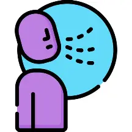

Temas de Interés
1. Comunicación Alternativa
La comunicación alternativa o aumentativa es esencial para personas con dificultades para hablar. Se utilizan gestos, símbolos, pictogramas y dispositivos electrónicos que permiten expresar ideas, necesidades y emociones sin usar la voz.
La elección del sistema adecuado depende de la motricidad, cognición y entorno del usuario. Pueden implementarse desde tableros simples hasta aplicaciones con predicción de palabras o voz sintetizada.
Integrar estas herramientas en la vida diaria es clave: en casa, escuela o comunidad, la persona aprende a comunicarse de manera funcional y efectiva, contando con apoyo de familiares y profesionales.
El uso de la comunicación alternativa reduce la frustración, fomenta la autonomía y fortalece la autoestima. Las personas que pueden expresar sus ideas se sienten más seguras y participativas.
Los avances tecnológicos, como seguimiento ocular e inteligencia artificial, amplían las posibilidades de interacción. La revisión y actualización del sistema asegura que evolucione según las necesidades del usuario.
Vídeo:
2. Terapias del Habla
La terapia del habla ayuda a mejorar articulación, respiración, fonación y fluidez, dirigida por logopedas o terapeutas del lenguaje según las necesidades individuales.
La evaluación inicial identifica sonidos problemáticos, postura de labios y lengua, coordinación respiratoria y entonación, lo que permite un plan personalizado de intervención.
Se emplean ejercicios de respiración, estiramientos orofaciales, repetición de sonidos y lectura en voz alta, con retroalimentación visual y auditiva para mejorar la precisión y claridad del habla.
La práctica constante, tanto en sesiones presenciales como en casa, garantiza que los avances se consoliden y se generalicen al entorno cotidiano.
Además de producir sonidos correctos, la terapia busca funcionalidad: poder participar en clases, expresarse en la comunidad y comunicarse con confianza, integrando a familiares y entorno social.
Vídeo:
3. Tecnología de Asistencia
La tecnología de asistencia incluye dispositivos, software y aplicaciones para facilitar o reemplazar funciones del habla y comunicación, desde tableros pictográficos hasta aplicaciones de texto a voz y control ocular.
Aplicaciones que convierten texto o imágenes en voz permiten a personas con dificultades de articulación comunicarse de forma efectiva, participando en entornos sociales y educativos.
Se debe elegir la tecnología según el nivel de habilidad del usuario, buscando interfaces amigables y confortables, con entrenamiento para el usuario y su entorno.
Integrar la tecnología en la educación y la vida diaria es clave: el dispositivo solo es útil si el entorno responde y utiliza los medios de comunicación proporcionados.
Los avances en inteligencia artificial, predicción de frases y realidad aumentada aumentan la independencia y la autonomía, mejorando la calidad de vida del usuario.
Vídeo:
Ejercicios de Respiración y Pronunciación
Respiración Profunda
Siéntate cómodo con la espalda recta. Inhala lentamente por la nariz contando hasta 4.
Mantén el aire 2 segundos y exhala despacio por la boca contando hasta 6.
Repite este ciclo 5 veces para relajarte y mejorar el control respiratorio.
Respirar profundamente ayuda a controlar la tensión al hablar o usar dispositivos de comunicación.
Realiza este ejercicio diariamente para fortalecer la capacidad pulmonar.
Pronunciación de Vocales
Repite cada vocal lentamente: A, E, I, O, U.
Concéntrate en abrir bien la boca y proyectar el sonido.
Hazlo frente a un espejo para observar la posición de labios y lengua.
Este ejercicio mejora la claridad de la voz y la articulación de palabras.
Practica varias veces al día en sesiones cortas de 3 a 5 minutos.

Traductor de Texto a Voz
Escribe cualquier texto en el recuadro y presiona "Leer Texto" para escucharlo.